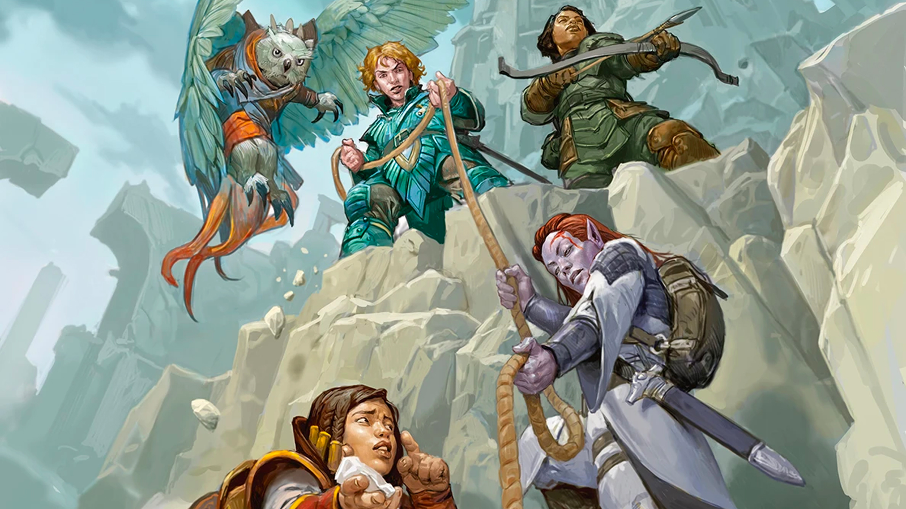

Assim como as classes, as raças são mais uma forma de personalização de personagens so que diferente das classes uma raça é a forma na qual um individuo nasceu e não algo que ele se tornou em algum momento, Por exemplo temos um tielfling que nasce com chifres e uma visão extraordinaria e um elfo que ja nasce conhecendo a natureza e sua forma em si. Agora iremos mostrar algumas das raças mais importantes de D&D
Em Dungeons & Dragons, os anões são uma raça jogável conhecida por sua resistência, habilidades em combate e proficiência em trabalhar com metais e pedras. Eles são conhecidos por sua resistência física, habilidade em combate corpo a corpo e habilidade em forjaria e construção. Os anões têm uma cultura orgulhosa, com forte ênfase na honra, lealdade e tradição. Eles são frequentemente retratados vivendo em comunidades subterrâneas e valorizam a vida em clãs.

Em Dungeons & Dragons, os elfos são uma raça jogável conhecida por sua agilidade, graça e longevidade. Eles possuem uma conexão profunda com a natureza e a magia, o que lhes confere habilidades especiais, como visão no escuro e resistência a efeitos de encantamento. Os elfos são ágeis em combate, preferindo o arco e flecha ou armas leves. Culturamente, os elfos valorizam a arte, a música e a beleza, vivendo em harmonia com a natureza por séculos em florestas ou reinos mágicos. Eles são seres de espírito livre, guiados pela curiosidade e sabedoria acumulada ao longo de suas vidas longas.
Em Dungeons & Dragons, os humanos são uma raça jogável conhecida por sua versatilidade e adaptabilidade. Ao contrário de outras raças, os humanos possuem uma vida relativamente curta, o que os leva a se esforçar por grandes realizações em um curto período. Eles são altamente ambiciosos e têm uma enorme diversidade cultural, o que permite que sejam encontrados em quase todas as partes do mundo. Os humanos são conhecidos por sua capacidade de se destacar em quase qualquer profissão, seja como guerreiros, magos, ou líderes de nações, refletindo sua natureza diversificada e engenhosa.
Em Dungeons & Dragons, os draconatos são uma raça jogável conhecida por sua ascendência dracônica, o que lhes confere uma presença imponente e habilidades relacionadas ao sopro elemental, como fogo, gelo ou trovão. Eles possuem traços físicos que lembram dragões, como escamas e chifres, além de uma afinidade natural com o poder e a força. Orgulhosos e determinados, os draconatos são muitas vezes movidos por um forte senso de honra e lealdade, traços herdados de seus ancestrais. Eles tendem a ser guerreiros poderosos ou líderes inspiradores, guiados pela busca de glória e respeito.
Em Dungeons & Dragons, os gnomos são uma raça jogável conhecida por sua inteligência, curiosidade e engenhosidade. Eles são pequenos em estatura, mas grandes em habilidades com magia e invenções. Culturamente, os gnomos são conhecidos por sua alegria e amor pelas brincadeiras, bem como por seu fascínio por mistérios e quebra-cabeças. Vivendo em comunidades escondidas nas florestas ou em tocas subterrâneas, eles apreciam a exploração e o conhecimento. Suas habilidades em ilusão e criação de dispositivos mecânicos ou mágicos fazem deles exímios artífices e magos.
Em Dungeons & Dragons, os tieflings são uma raça jogável marcada por sua herança infernal, resultando em uma aparência demoníaca com chifres, caudas e pele de tons exóticos. Apesar de sua origem sombria, os tieflings têm liberdade para escolher seu próprio destino, e muitos lutam contra o preconceito devido à sua aparência. Eles são conhecidos por sua astúcia, habilidade em magia e resistência a danos provenientes de fogo. A cultura tiefling é frequentemente moldada por uma busca de aceitação e redenção, com muitos seguindo carreiras como feiticeiros ou ladinos, usando suas habilidades naturais para sobreviver em um mundo que frequentemente os julga.